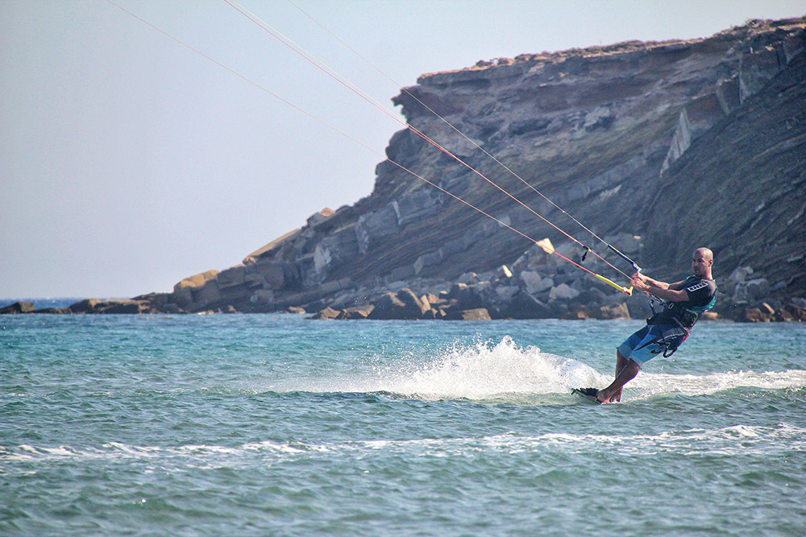

מהו קייטסרף? (גלישת עפיפונים)
קַיְטסֶרְפִינְג או גלישת קַיְט שנקראת גם גלישת עפיפונים היא גלישה באמצעות מצנח מיוחד ושימוש בכוח הרוח כדי לגלוש על גלשן קטן ממדים במים. גלישת קיט היא הספורט הימי שמתפתח במהירות בעולם. ממציאו של הספורט אינו ידוע, אך הוא הופץ על ידי תושבים מצרפת והוואי בשנת 1999. בחודש מאי 2012 קבע איגוד השיט העולמי כי גלישת קיט תהפוך למקצוע אולימפי החל מאולימפיאדת ריו דה ז'ניירו (2016) במקום גלשנים מדגם ניל פרייד RS:X, אך ההחלטה בוטלה כעבור מספר חודשים.

פרסוניסי - יוון
הציוד
הגולשים בגלישת קייט (אנגלית: kitesurfing) משתמשים בציוד הבא:
-
גלשן (twin tip board) - לוח גלישה בעל 4 חרבות אשר מאפשר לגולש לרכב עליו בשני הכיוונים (בניגוד לגלשן גלים).
-
קייט (kite) - באנגלית עפיפון, בעברית חופה אליו מתחבר הגולש. החופה מורכבת ממספר בידונים (struts) המכילים אוויר הנדחס פנימה על ידי משאבה בלחץ אויר בין 5–7 psi, אלו משמשים לשמירה על יציבות ומבנה העפיפון, כמו כן כדי לאפשר לו יכולת ציפה במים כדי שיהיה ניתן להניף את הקייט שוב מפני המים מעלה, במקרה שבו העפיפון נופל למים (מסיבת חוסר שליטה בעפיפון או נפילה של הרוח).
-
בר (bar) - זהו מוט ההיגוי שמחובר לעפיפון המאפשר שליטה על דרך 4 או 5 חוטים באורך של בין 20 ל 27 מטר.
-
טרפז (harness) - סוג של ריתמה שמתיישבת על גוף הגולש ואליה מתחבר הבר.
-
משאבה (pump)- לרוב מדובר במשאבה אשר הגולש נושא אותה בצמוד לעפיפון ובאמצעותה מנפח את הבידונים של העפיפון (בידון ראשי- leading edge) כמו כן את הבידונים הקטנים (struts)